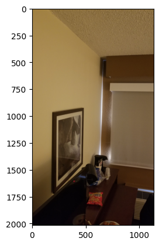
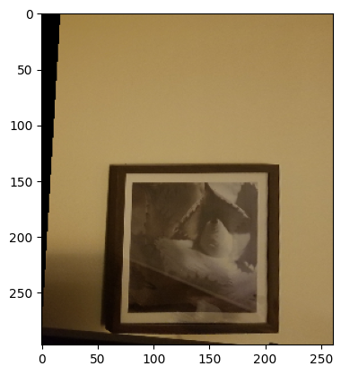
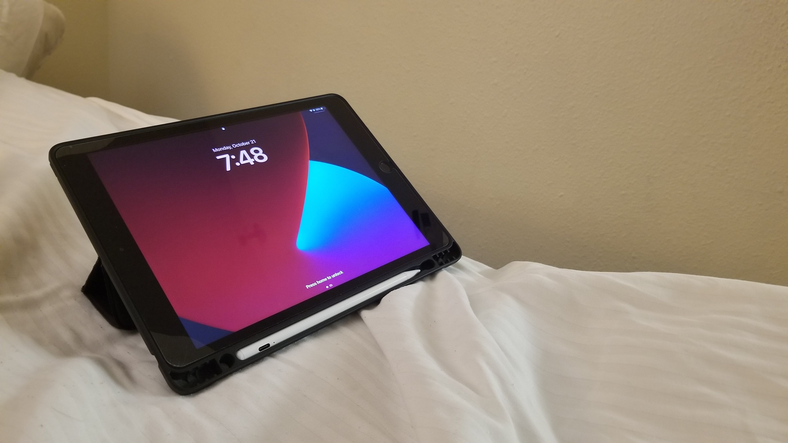
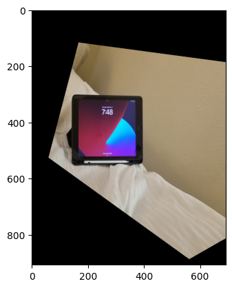

Overview
In this project, we focus on shooting our own images and finding correspondences in between them to a lot of interesting things. First, we warp images and calculate its rectification, which allows us to see images as if they were posted in front of us, rather than in perspective. Second, we can use this information to blend images together and form panoramic views.
Shoot the Pictures & Recovering Homographies
Here are some pictures from the rooftop of an apartment.
A homography is a 3x3 matrix which represents a transformation between a pair of images. We can recover a homography by using pairs of corresponding points. The points on the pictures above represent the corresponding points. To implement this function, I went through each pair of points and created a system of equations to obtain the homography matrix’s coefficients, of which there will be 9 values. I then solved it with a least squares solver and reshaped it into a 3x3 matrix.
Warp the Images & Image Rectification
For this we use a function that takes in an image and a homography matrix. I define the image’s corners in the same order I took the points in for image rectification. I then warped those corners with the input homography matrix and calculated a bounding box for my resulting image. Then, I found all the values within the bounding box and applied the inverse homography matrix to them. Finally, I ran interpolation with griddata to achieve the final result. To get the images for rectification, I found images with rectangles and chose its destination coordinates to be an arbitrary value found in the caption of the images below. My image took very high resolution images that the code couldn’t process, so I resized my images, resulting in a little blurriness. This is reflected in the rectified images as well.
|

Original Painting
|

Rectified Painting
|
|

Original iPad
|

Rectified iPad
|
Blending Images
To blend images, I used some of my code from Project 2 as reference, particularly the part regarding blending with Laplacian pyramids. The key difference in this section is computing the mask that allows us to blend both images. Previously, it was a half white, half black mask because we wanted half of an apple and half of an orange. This time, we need to compute a distance map that determines how much of an impact the images should have in the blend for different parts of the total image. We also need to create a canvas that can hold both images, so we have a true merging of images, instead of one just overlapping the other.
|
Original Painting
|
Rectified Painting
|